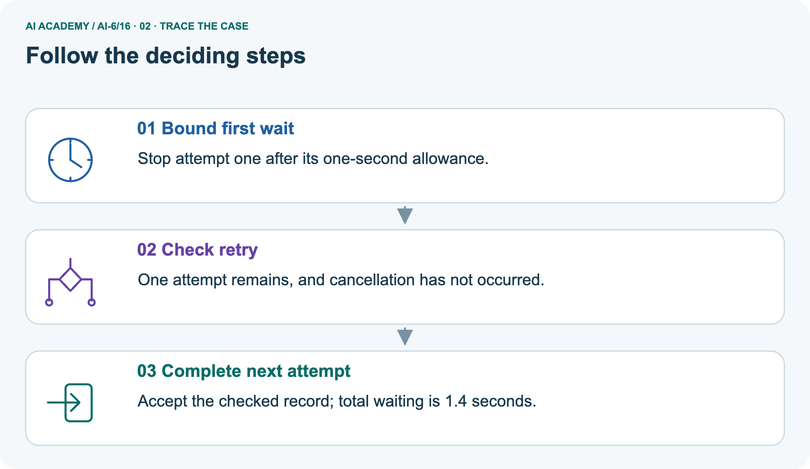
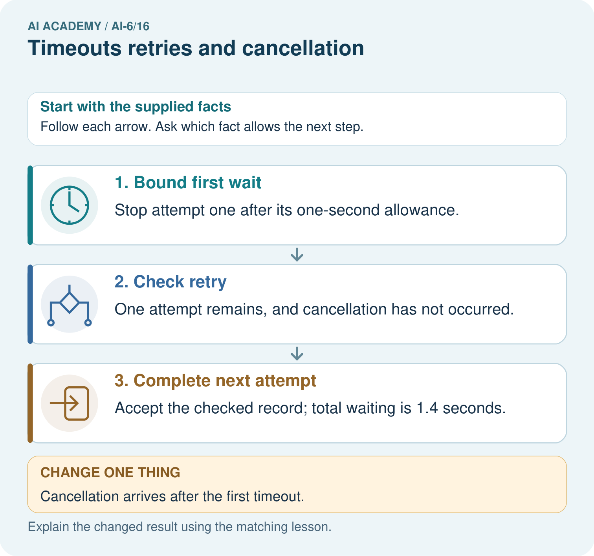
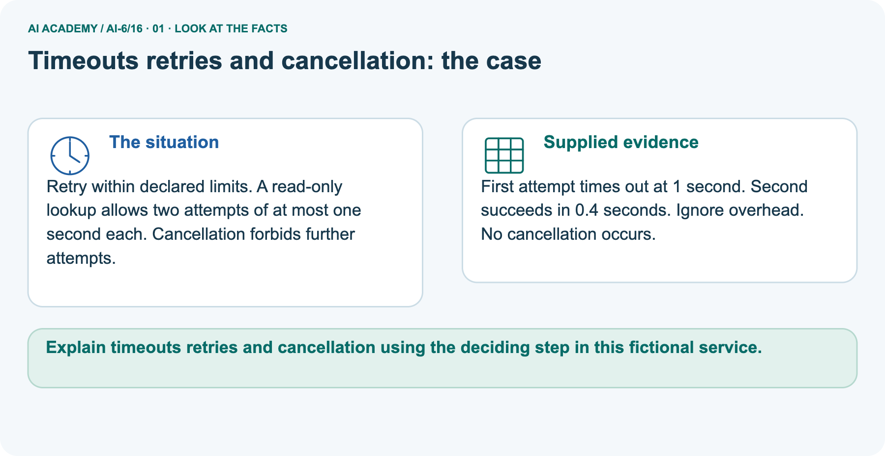
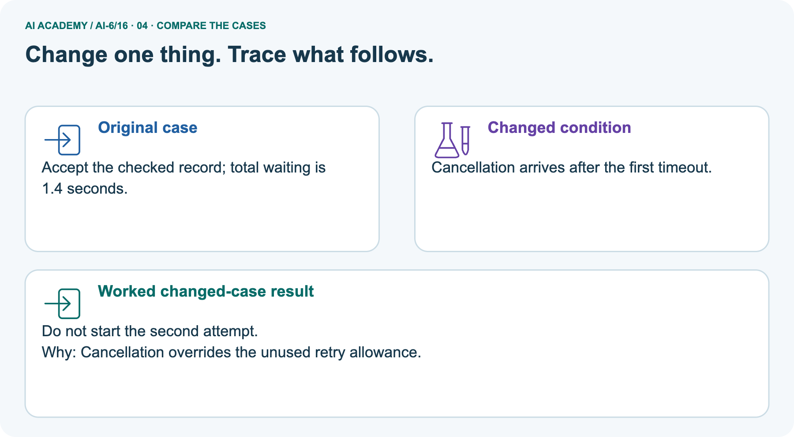
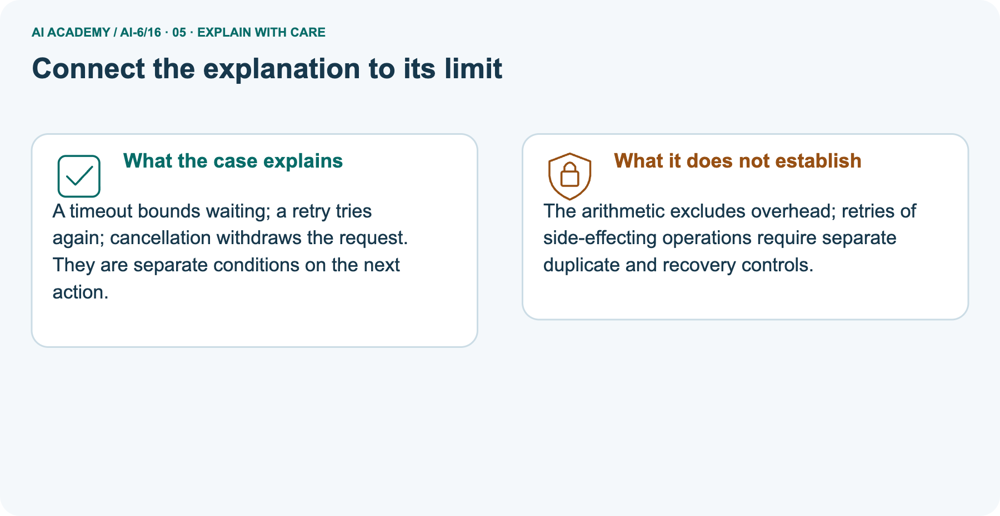
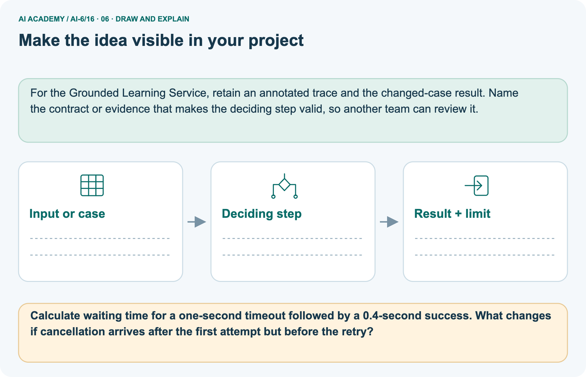

AI Academy · Level 6 · Grade 11 · Week 16 · Teacher guide
Timeouts retries and cancellation
Learn to understand, design, build, test and explain AI systems responsibly.
Project: Grounded Learning Service
THE CONNECTED WEEK
Ask whose waiting is bounded and which next action is still permitted.
Use explicit virtual timelines and no-real-clock claims while keeping transient policy and side-effect recovery separate.
Keep one habit: Model all waits/gaps → inspect attempt counts → compare cancellation outcomes → assess fresh bound and nonretryable failure → declare real implementation evidence still needed.
Main lesson · Section 1
Prepare the connected service investigation
Keep modelling, shared practice and independent evidence distinct.
Target and main teaching plan
Primary target: Explain the mechanism and terminology of timeouts retries and cancellation
| Session | Sequence and minutes | Resources |
|---|---|---|
| Session 1 · Understand · 45 min | 0–7: recall and prerequisite; 7–15: inspect the concrete case and predict; 15–30: teacher models the worked trace; 30–40: learners explain a step using the text and visual; 40–45: check the core idea. | Use Your mission, Notice the evidence, See how it works, Words that unlock the idea and Follow a worked example; record recall in the workbook. |
| Session 2 · Practise · 45 min | 0–5: retrieve the procedure; 5–15: W2 completion practice; 15–23: explain and check with a partner; 23–30: each learner answers the misconception check; 30–40: targeted reteaching or a harder variation; 40–45: prepare the investigation. | Use Find and repair a mistake, Practise together and Build your understanding; use the matching workbook W2 and Individual reasoning check. |
| Session 3 · Investigate and transfer · 45 min | 0–5: retrieve the decision rule; 5–20: investigate or trace; 20–30: start the independent case; 30–38: connect the project; 38–43: act on feedback; 43–45: plan the return check. | Use Run the investigation, Connect your project and Try a new case independently. Allow extra time for the full task set. When code is supplied, use the examples in See how it works or Follow a worked example and the browser lab in Supported practice, repair and portfolio. |
This is a starting allocation of 135 minutes, not a validated duration. Preserve all named topics. Schedule extra time for connected examples, the full investigation, independent cases and project building.
Repeated copies of a case share one recorded attempt; they are not new evidence.
Preparation and prerequisite
Lesson and workbook; paper and pencil
Calculator and optional local Python 3 for arithmetic; no live API or private data
Prepare the fresh retry separately and withhold its solution until after collection
A result depends on the inputs, procedure and conditions that produced it. Preserve data roles and distinguish observed outcomes from predictions or unmeasured conditions.
If the prior concept cannot be explained, use a short retrieval activity before this chapter.
Opening retrieval
Without opening the old lesson, explain one key idea from Approval gates and idempotency. Give an example and a mistake that the idea helps you avoid.
Look for: Explain the mechanism and terminology of approval gates and idempotency
Reference example, not the only acceptable wording: Teacher explanation: Approval gates bind side effects to an actor, exact version and destination.
Idempotency prevents repeated requests with the same key from repeating a committed effect. The mock submission requires approval for request version v1 and destination D. Store key -> committed result.
Reusing the same key with the same payload returns that result; the same key with different payload is rejected.
Without opening the old lesson, explain one key idea from State machines for bounded agents. Give an example and a mistake that the idea helps you avoid.
Look for: Explain the mechanism and terminology of state machines for bounded agents
Reference example, not the only acceptable wording: Teacher explanation: A bounded agent uses explicit states and finite action limits. A state machine makes invalid transitions visible.
States are ready, looking_up, review, done. ready may start lookup; lookup may finish done or request review; review may finish done after authorised evidence. done is terminal. Maximum two lookup attempts.
Without opening the old lesson, explain one key idea from Evaluation pipelines. Give an example and a mistake that the idea helps you avoid.
Look for: Explain the mechanism and terminology of evaluation pipelines
Reference example, not the only acceptable wording: Teacher explanation: Evaluation pipelines preserve case versions, procedure versions and raw outcomes before producing metrics. A rerun must identify what changed.
Load versioned cases, validate expected outcomes, execute the frozen system, store case-level results and compute declared denominators. Reject missing results rather than silently counting them as success.
Pictured end goal
Explain timeouts retries and cancellation using the deciding step in this fictional service.
Earlier wording, alternatives and picture transcripts
Teach the learning cycle
Retrieval answer guidance
Approval gates and idempotency
State machines for bounded agents
Evaluation pipelines
Use the three-session teaching cycle above, with extra time as needed. Timeouts bound waiting; retries consume a finite budget. Cancellation should stop future work while accounting for operations already committed. Use the supplied constructed scenarios to make the mechanism inspectable. Collect W4 before sharing solutions. Students should name intermediate evidence and limitations; classroom pacing and learning effectiveness remain unvalidated.
Outcomes
Explain the mechanism and terminology of timeouts retries and cancellation
Apply the stated procedure to a new case with a traceable result
Identify an assumption or limitation and design a revealing follow-up
Preparation
Prerequisite answer
End goal for the pictorial case
This added worked case illustrates the week’s main idea. Retain all original and connected topics; schedule its practice within the teaching cycle.
Main lesson · Section 2
Teach caller-wait bounds, finite retries and uncertain remote outcomes distinctly
Make assumptions and between-attempt cancellation scope visible in every timing claim.
Definitions and complete timing contract
Timeouts bound waiting; retries consume a finite budget. Cancellation should stop future work while accounting for operations already committed.
Retry only declared transient failures. Use at most three attempts with waiting gaps 1 and 2 seconds; the caller waits at most 4 seconds for each attempt under the enforced local timeout model. Worst-case elapsed bound excluding overhead is 3*4+1+2=15 seconds.
| Main virtual waiting contract | Declared value or rule |
|---|---|
| Maximum attempts | 3 total attempts, including the first; at most 2 retries |
| Per-attempt cap | Caller waits at most 4 seconds under the enforced local model |
| Retry gaps | 1 second before attempt 2; 2 seconds before attempt 3 |
| Retryable categories | Only timeout/transient under this declared simulation policy |
| Nonretryable categories | Authentication, permission or invalid-request failures stop automatic retry |
| Cancellation model | Can be supplied before an attempt/backoff starts; prevents that future attempt |
| Overhead | Excluded from arithmetic; no real timer is used |
| Side-effect scope | Read-only model or a separately justified safe-retry policy; no automatic duplicate/undo guarantee |
| Maximum modeled waiting | 3×4 +1+2 =15 seconds; no fourth attempt |
Timeline, exact main arithmetic and checked reasoning

| Main event | Modeled interval in seconds | Elapsed end | Reason |
|---|---|---|---|
| Attempt1 times out | 0–4 | 4 | Uses first capped caller wait |
| Gap before retry | 4–5 | 5 | Declared1 second gap |
| Attempt2 times out | 5–9 | 9 | Second of3 attempts |
| Gap before retry | 9–11 | 11 | Declared2 second gap |
| Attempt3 times out | 11–15 | 15 | Budget exhausted |
| Proposed attempt 4 | Not started | 15 | An extra desired result does not add authority or budget |
Main 3 attempts include the first and 2 retries; 4+1+4+2+4=15 seconds under enforced caller caps, with overhead excluded. Stop before a fourth attempt. A caller-wait timeout is not a proof that the remote operation ran for at most 4 seconds or did not commit. The pictured case has a different cap/budget: 1+0.4=1.4 seconds, or 1 second with cancellation before the retry.
The code’s success/cancellation/failure outcomes are supplied fixtures and virtual arithmetic, not a live timing/cancellation experiment. Authentication or permission failures are not automatically retryable under the declared policy. Keep side-effect reconciliation separate from local waiting control.
Timeouts retries and cancellation — evidence trace
Guided: Budget is exhausted after 15 seconds under the model; reject fourth attempt. A late side-effect result must still be reconciled.
Qualification: A timeout means the caller lacks a timely result, not necessarily that the remote operation did not occur.
Exit: accept a concrete variation with its predicted outcome and a stated condition that would challenge the mechanism; reject a claim resting on unmeasured evidence.
Three attempts each time out after 4 seconds with gaps 1 and 2. A fourth is proposed.
Budget is exhausted after 15 seconds under the model; reject fourth attempt. A late side-effect result must still be reconciled.
Compare the intermediate evidence with the final statement. Explain why each number or decision follows from the stated inputs.
The conclusion belongs to this scenario and procedure; changing the inputs, evaluation population or authority can change what it establishes. Retain the raw record so a later revision can be compared honestly.
Transient, numeric and cancellation-scope probes
| Timing or retry probe | Expected interpretation |
|---|---|
| Three 4-second timeouts plus gaps 1/2 | 15 seconds modeled waiting; attempt 4 not permitted |
| A declared transient failure with budget remaining | May retry under this local policy after the declared gap |
| Authentication/permission/invalid-request failure | Stop automatic retry; spare budget does not repair authority or input |
| Cancellation before next attempt/backoff | Stop future modeled work without deleting earlier outcome records |
| Negative, nonfinite or Boolean duration | Reject in the extended arithmetic helper |
| Gap count differs from attempts−1 | Reject incomplete timing contract |
| Caller timeout occurs | Remote work may still have happened; reconcile possible committed effects |
| Cancellation is requested | Does not automatically undo already committed effects |
| Virtual simulation passes | No measured wall-clock bound, network abort or asynchronous cancellation implementation established |
Separate pictured caps and outcome fixtures
Retry within declared limits. A read-only lookup allows two attempts of at most one second each. Cancellation forbids further attempts.
First attempt times out at 1 second. Second succeeds in 0.4 seconds. Ignore overhead. No cancellation occurs.
The main model allows 3 attempts with 4 second caller caps and gaps 1/2 seconds. The picture is separate: a read-only lookup allows 2 attempts with 1 second caps, no retry gap and no overhead. A 1-second timeout followed by a 0.4-second successful fixture totals 1.4 seconds.
If cancellation is supplied immediately after the first timeout and before retry/backoff, the second attempt does not start and modeled elapsed waiting stays 1 second. Success is a supplied checked-outcome fixture, not an actual response validation or live lookup.
Picture trace and no-second-attempt key



Read the picture one step at a time
A timeout bounds waiting; a retry tries again; cancellation withdraws the request. They are separate conditions on the next action.
The arithmetic excludes overhead; retries of side-effecting operations require separate duplicate and recovery controls.
Change: Cancellation arrives after the first timeout.
Prediction: Do not start the second attempt.
Reason: Cancellation overrides the unused retry allowance.
Reference: original compact helper
Optional local lab: predict the printed result before running this standalone Python 3 example. Change one relevant boundary input, record the outcome and state the contract or statistical assumptions.
The program uses fictional values and the Python standard library; it performs no external operations.
def waiting_bound(attempts, per_attempt, gaps):
if type(attempts) is not int or attempts < 1 or len(gaps) != attempts - 1:
raise ValueError('attempt budget')
if per_attempt < 0 or any((g < 0 for g in gaps)):
raise ValueError('negative duration')
return attempts * per_attempt + sum(gaps)
print(waiting_bound(3, 4, [1, 2]))Earlier wording, alternatives and picture transcripts
Begin by writing the question the procedure is intended to answer. Identify the information already supplied, the information it will produce and the information still missing.
These are constructed classroom examples; they do not require live accounts, private records or an external service. Do not treat a plausible explanation as a measured outcome.
Before applying the procedure, write its units, denominator or decision boundary where relevant. A partner should be able to repeat each step using the same inputs.
If a required input is absent or violates the stated contract, record that condition explicitly instead of quietly replacing it with a convenient value.
| Term | Meaning |
|---|---|
| Timeout | A declared limit on waiting |
| Retry budget | The maximum repeat attempts or resources |
| Cancellation | A request to stop future processing |
Model the reasoning aloud
Use the complete worked example below before asking learners to complete W2. Reveal a small part, invite a prediction, then explain the deciding step.
These teacher notes contain solutions; do not reveal the independent case answer during modelling.
| Thinking move | Teacher prompt |
|---|---|
| Plan | What is given? What is the question? Which procedure fits these facts? |
| Do | Point to each input and intermediate step in the worked trace. Name the rule that allows the next step. |
| Check | Does the output answer the question? Which assumption or limitation prevents a larger claim? |
Use the diagram and verbal explanation together. Ask learners to match a sentence to a specific visual step; do not assign learners fixed visual or auditory learning styles.
A pictorial worked case: Timeouts retries and cancellation
The facts we will use



Why this result follows
What this example does not establish
Change one thing in the pictured case
Ask while showing the picture
Cover the result. Ask learners to name the inputs and predict the next step. Uncover one step, connect the icon to the actual procedure, and explain its evidence. Then change the supplied condition and compare.
The picture is a representation; it does not document execution of a real AI model.
Main lesson · Section 3
Model a step,then remove help
Collect each learner’s reasoning before showing a key.
Current completion task and checked reasoning
Completion task: Three attempts each time out after 4 seconds with gaps 1 and 2. A fourth is proposed. Show the intermediate steps and give the conclusion with its scope.
Teacher check: Teacher explanation: Budget is exhausted after 15 seconds under the model; reject fourth attempt. A late side-effect result must still be reconciled.
Start by identifying the given inputs together. Leave the intermediate steps blank. If needed, model one step, then withdraw that help on the next step. Move to a full trace only when the partial trace is understood.
For partners, alternate explainer and checker; collect a response from every learner before discussion.
Individual misconception check
Use the worked case for Timeouts retries and cancellation. Proposed explanation: “The worked result establishes every future case”. Decide whether this explanation is supported.
Point to the step or supplied fact that decides; explain your repair if needed.
Expected correction: A timeout means the caller lacks a timely result, not necessarily that the remote operation did not occur.
Collect explanations, not only yes/no votes. If a misunderstanding is common, re-model the relevant step for the class.
If it affects a few learners, give a short targeted group explanation while others solve a more demanding variation.
Pictured reasoning and changed case
Calculate waiting time for a one-second timeout followed by a 0.4-second success. What changes if cancellation arrives after the first attempt but before the retry?
Stop attempt one after its one-second allowance. One attempt remains, and cancellation has not occurred. Accept the checked record; total waiting is 1.4 seconds. Changed case: Do not start the second attempt.
Cancellation overrides the unused retry allowance.
Changed-case reasoning: Do not start the second attempt. Cancellation overrides the unused retry allowance.
Collect each learner’s explanation before discussion. Use the first missing connection between input, deciding step and result to choose support. This question is worked-case practice, not fresh mastery evidence.
Accessible support and extension
Use See how it works and Follow a worked example. Collect a prediction before revealing its result; ask the learner to point to each intermediate fact.
Provide an input/procedure/result/limit frame and a calculator when needed. Ask students to identify the first step before completing the whole trace.
Extension: compare two concrete variants of this mechanism while holding unrelated conditions fixed; report both successful and unsuccessful outcomes.
Earlier wording, alternatives and picture transcripts
| Time or stage | Teacher action |
|---|---|
| Session 1: 0–7 minutes | Retrieve the prerequisite; identify the input, procedure and evidence source. |
| 7–18 minutes | Explain section 1 and vocabulary. Complete W1 with a mechanism-based explanation. |
| 18–32 minutes | Trace the declared procedure and worked case. Complete W2, recording intermediate steps. |
| 32–45 minutes | Discuss the diagram with the worked input; use W3 to distinguish measured claims and limitations. |
| Session 2: 0–8 minutes | Retrieve the worked reasoning and collect the guided response before discussing it. |
| 8–20 minutes | Compare a proposed boundary variant with the original case; identify what remains fixed. |
| 20–35 minutes | Collect W4 independently. Require the procedure trace and the bounded conclusion. |
| 35–45 minutes | Use W5 and exit responses for feedback. Administer the fresh retry after feedback and preserve both attempts. |
Reduce help deliberately
Individual reasoning check
Pictorial practice question
Reasoned teacher answer
Main lesson · Section 4
Run the complete supplied investigation
Separate predictions,actual runs and paper traces.
Complete inputs,expected results and limits
Main bound 15 seconds, 3 attempts only; pictured 1.4 seconds without cancellation, 1 second and no second attempt after cancellation. A supplied non-transient failure stops immediately regardless of remaining budget. Independent 2 attempts×5 seconds plus 2 second gap =12 seconds, excluding overhead under enforced caller caps.
Authentication failure is not automatically retryable under the declared policy; correct authority/credentials through the proper process rather than repeating the same failed action. No remote rollback or exactly-once guarantee follows from a timeout.
Diagnose the current misconceptions
The worked result establishes every future case: A timeout means the caller lacks a timely result, not necessarily that the remote operation did not occur.
A missing input may be replaced without recording the change: A replacement changes the evidence or contract. Record the change and its justification; do not silently turn unknown into a measured value.
Repeating an assessed case is new independent evidence: A replay checks consistency. An example used for feedback or revision cannot later be described as untouched final evaluation.
Use Run the investigation for the evidence ledger. Add a boundary or missing-input case and record the expected response before checking. More successful repeats of one case do not establish wider coverage.
Choose accessible support
| What the response shows | Next teaching action |
|---|---|
| Missing or misread facts | Read the case aloud, mark supplied versus unknown facts, and let the learner restate it. |
| Wrong procedure | Return to the deciding step in the worked case. Contrast it with the proposed incorrect explanation. |
| Arithmetic or implementation error | Trace intermediate values or lines; preserve the first mismatch and retry that step. |
| Correct result without a reason | Ask for a trace and a changed case before marking independent understanding. |
| An unsupported wider claim | Ask which supplied evidence supports the claim and which further observation would be needed. |
Offer an oral explanation, drawing, enlarged visual or fewer examples when that removes a reading/writing barrier. Keep the same reasoning goal.
Stretch secure learners by changing a boundary or assumption and asking them to defend the effect, not simply by assigning more of the same questions.
Earlier wording, alternatives and picture transcripts
Match the support to the first error
Main lesson · Section 5
Assess the new service scenario
Keep the selected answer private until after a first attempt.
Selected independent task and checked answer
Selected case: Two attempts, each up to 5 seconds, gap 2. Compute bound and decide whether authentication failure should retry.
Teacher explanation: Bound 12 seconds excluding overhead. Authentication failure is non-transient under this policy; do not retry it.
Judge explanation,trace and limits
| Dimension | Evidence required |
|---|---|
| Explanation | Names the applicable idea or procedure and ties it to the supplied facts. |
| Trace and result | Preserves the given inputs and shows the relevant intermediate steps; distinguishes a prediction from an observed execution. |
| Limits | States the assumptions, missing evidence or conditions under which the result would change. |
Record each dimension as not yet, with support, or independent. Accept a valid alternative procedure with a defensible trace.
Do not penalise an honestly recorded model failure if the learner correctly explains its evidence and limits.
Give one usable repair
Name the earliest unsupported step and give one action to repair it. Have the learner make that repair now and explain why. Then assess the relevant skill on a fresh, fully specified case.
Confirm it was not previously practised with feedback; solve and check the new case before assigning it. A follow-up design prompt is a starting brief, not automatically an equivalent test.
W1 Explain the mechanism
Explain the weekly mechanism in your own words. Use the worked scenario to name its input, decision rule and output.
Teacher explanation: Timeouts bound waiting; retries consume a finite budget. Cancellation should stop future work while accounting for operations already committed. Retry only declared transient failures. Use at most three attempts with waiting gaps 1 and 2 seconds; the caller waits at most 4 seconds for each attempt under the enforced local timeout model. Worst-case elapsed bound excluding overhead is 3*4+1+2=15 seconds.
W2 Trace the worked case
Three attempts each time out after 4 seconds with gaps 1 and 2. A fourth is proposed. Show the intermediate steps and give the conclusion with its scope.
Teacher explanation: Budget is exhausted after 15 seconds under the model; reject fourth attempt. A late side-effect result must still be reconciled.
W3 Audit the limit
A report omits this qualification: A timeout means the caller lacks a timely result, not necessarily that the remote operation did not occur.
Explain how omitting it could change a reader's interpretation, and write an accurate replacement.
Teacher explanation: A timeout means the caller lacks a timely result, not necessarily that the remote operation did not occur.
State the observed result separately from the unverified or out-of-scope claim; preserve the original evidence rather than inventing a missing fact.
W5 Design a revealing follow-up
For the worked scenario, propose one additional case that could reveal a failure, describe its expected outcome before running it, and explain what would need to remain fixed for a fair comparison.
Do not reuse W4 as a new final test after receiving feedback.
Teacher explanation: Accept a concrete variant of the worked input or a missing/conflicting/boundary condition, with an expectation derived from the declared procedure.
Require preserved settings, original outputs and data roles. A timeout means the caller lacks a timely result, not necessarily that the remote operation did not occur.
The new case should test this particular mechanism rather than merely restate the original result.
Earlier wording, alternatives and picture transcripts
Guided and exit questions
Guided: Budget is exhausted after 15 seconds under the model; reject fourth attempt. A late side-effect result must still be reconciled.
Qualification: A timeout means the caller lacks a timely result, not necessarily that the remote operation did not occur.
Exit: accept a concrete variation with its predicted outcome and a stated condition that would challenge the mechanism; reject a claim resting on unmeasured evidence.
W1 Explain the mechanism
W2 Trace the worked case
W3 Audit the limit
W4 Apply a new case independently
Two attempts, each up to 5 seconds, gap 2. Compute bound and decide whether authentication failure should retry.
Teacher explanation: Bound 12 seconds excluding overhead. Authentication failure is non-transient under this policy; do not retry it.
W5 Design a revealing follow-up
Independent assessment and fresh retry
W4: Bound 12 seconds excluding overhead. Authentication failure is non-transient under this policy; do not retry it. Require intermediate reasoning and the stated scope.
Fresh retry: Four attempts, each up to 2 seconds, gaps 1, 2, 4. Expected reasoning: Bound 15 seconds. Cancellation prevents new attempts; it cannot undo an already committed effect.
If students need support, record it and reassess with another new case rather than awarding independence to a copied answer.
Assess independent transfer
Selected case answer
Feedback that the learner uses
Main lesson · Section 6
Connect, support and revisit service design
Use saved evidence and boundary decisions to choose the next step.
Project and next-week bridge
Add a labelled timeouts retries and cancellation evidence sheet to Grounded Learning Service. Show how you can explain the mechanism and terminology of timeouts retries and cancellation.
Use the supplied fictional case and keep its inputs, intermediate steps, calculation or prediction, and limitation. Connect this record to last week’s record; a matching answer without a trace is insufficient.
Provide an input/procedure/result/limit frame and a calculator when needed. Ask students to identify the first step before completing the whole trace.
Extension: compare two concrete variants of this mechanism while holding unrelated conditions fixed; report both successful and unsuccessful outcomes.
Next connection: External side effects and recovery. Preserve the current case record and retrieve its evidence boundary before moving on.
Retain the project ledger and assess a changed case after support. Check the relevant prerequisite before carrying this component forward.
For the Grounded Learning Service, retain an annotated trace and the changed-case result. Name the contract or evidence that makes the deciding step valid, so another team can review it.
Delayed return and support record
Suggested return points in this level: ai-6/17, ai-6/19, ai-6/22. Use actual classroom dates, adjusting for holidays and gaps. One, three and six teaching weeks are scheduling choices, not a claimed optimal spacing.
At a delayed check, ask for the idea from memory and a changed application. Compare with the earlier independent response and record support used.
For a new level, revisit the previous capstone before checking the new prerequisites.
| Record | Teacher evidence |
|---|---|
| Learner code and date | |
| Concept and case used; prior exposure | |
| Explanation / trace / limits | |
| Support and first repair | |
| Changed case and delayed outcome | |
| Next teaching action |
Use the evidence to choose reteaching or the next step. A completed page, confidence rating or attractive project does not by itself demonstrate understanding.
Earlier wording, alternatives and picture transcripts
Plan the delayed return
Project evidence from this case
Reference bank and extra practice
Choose the reference that helps your next step.
Reference · Alternative planning checklist
Reference · Section 7
Reference · Alternative planning checklist
Use alongside the main route when helpful.
Planning,assessment and project reminders
Teaching target: Explain the mechanism and terminology of timeouts retries and cancellation
Prepare the labelled worked-case picture, the matching workbook, fictional input cards and a place for individual responses. Check a local Python 3 environment before class; have a paper-trace version ready.
| Session | Plan | Resources |
|---|---|---|
| Session 1 · Understand · 45 min | 0–7: recall and prerequisite; 7–15: inspect the concrete case and predict; 15–30: teacher models the worked trace; 30–40: learners explain a step using the text and visual; 40–45: check the core idea. | Use Your mission, Notice the evidence, See how it works, Words that unlock the idea and Follow a worked example; record recall in the workbook. |
| Session 2 · Practise · 45 min | 0–5: retrieve the procedure; 5–15: W2 completion practice; 15–23: explain and check with a partner; 23–30: each learner answers the misconception check; 30–40: targeted reteaching or a harder variation; 40–45: prepare the investigation. | Use Find and repair a mistake, Practise together and Build your understanding; use the matching workbook W2 and Individual reasoning check. |
| Session 3 · Investigate and transfer · 45 min | 0–5: retrieve the decision rule; 5–20: investigate or trace; 20–30: start the independent case; 30–38: connect the project; 38–43: act on feedback; 43–45: plan the return check. | Use Run the investigation, Connect your project and Try a new case independently. Allow extra time for the full task set. When code is supplied, use the examples in See how it works or Follow a worked example and the browser lab in Supported practice, repair and portfolio. |
Before class, solve the supported practice: Three attempts each time out after 4 seconds with gaps 1 and 2. A fourth is proposed. Show the intermediate steps and give the conclusion with its scope.
Reasoned practice answer: Teacher explanation: Budget is exhausted after 15 seconds under the model; reject fourth attempt. A late side-effect result must still be reconciled.
Check every learner before discussion: Use the worked case for Timeouts retries and cancellation. Proposed explanation: “The worked result establishes every future case”. Decide whether this explanation is supported.
Point to the step or supplied fact that decides; explain your repair if needed.
Misconception repair: A timeout means the caller lacks a timely result, not necessarily that the remote operation did not occur.
Support: read the exact case aloud, enlarge the labelled picture, supply input cards and model only the first deciding step. Accept a spoken explanation or drawing; retain the reasoning goal.
Extension: Cancellation arrives after the first timeout. Require a prediction and a reason before comparing. Expected result: Do not start the second attempt. Reason: Cancellation overrides the unused retry allowance.
Independent assessment: withhold the reserved answer until the learner has attempted the new case. Record support separately from correctness.
| Criterion | Not yet | With support | Independent |
|---|---|---|---|
| Explanation | Names an answer without a deciding fact | Uses a hint to link fact and decision | Explains the deciding fact in own words |
| Trace or test | Cannot connect input and result | Completes steps with prompts | Traces or tests a changed case accurately |
| Limits and revision | Claims more than evidence supports | Names a limit after a prompt | States a defensible limit and useful next test |
Project checkpoint: Test changed cases. Keep normal, boundary and failure cases; compare expected and observed results.
Use the weekly teacher answer for topic-specific reasoning. A saved progress tick is an activity record; judge mastery from the learner’s explanation and evidence.
Reference · Feedback,labs and repair paths
Reference · Section 8
Reference · Feedback,labs and repair paths
Retain the first attempt and the evidence used for a repair.
Feedback and record guidance
Use the two formative questions as supported practice, not as independent mastery scores. Discuss the deciding evidence rather than accepting a guessed selection.
The feedback comes from the reviewed public worked case. Do not reveal the separately reserved independent teacher answer until the learner has attempted that case.
Ask students to predict before running code. Preserve errors and actual outputs; collect a changed test and an explanation. The branch-boundary and indexing lessons deliberately include failure cases.
Use the earlier worked-explanation links to address a specific missing building block, then return to the current question. Adapt this suggestion after observing the learner; it is not an automatic diagnosis.
Collect the completed-work portfolio as evidence. Record support separately from correctness, and assess explanation, trace/test and limitations. Progress ticks and quiz selections alone do not establish mastery.
Reference · Teach with the six pictures
Reference · Section 9
Reference · Teach with the six pictures
Choose one picture for a particular reasoning move.
01. Timeouts retries and cancellation: the case



Retry within declared limits. A read-only lookup allows two attempts of at most one second each. Cancellation forbids further attempts. Supplied facts: First attempt times out at 1 second. Second succeeds in 0.4 seconds.
Ignore overhead. No cancellation occurs.
Point to the given fact that matters most. Explain why it matters.
Teacher prompt: Point to the given fact that matters most. Explain why it matters. Ask learners to describe one label or arrow in ordinary words. Use the adjacent transcript if the image is difficult to see.
02. Follow the deciding steps
Bound first wait: Stop attempt one after its one-second allowance. → Check retry: One attempt remains, and cancellation has not occurred. → Complete next attempt: Accept the checked record; total waiting is 1.4 seconds.
Point to each numbered stage and explain which recorded input it uses.
Teacher prompt: Point to each numbered stage and explain which recorded input it uses. Ask learners to describe one label or arrow in ordinary words. Use the adjacent transcript if the image is difficult to see.
03. Timeouts retries and cancellation — evidence trace
![Timeouts retries and cancellation — evidence trace. Three attempts each time out after 4 seconds with gaps 1 and 2. A fourth is proposed. | Retry only declared transient failures. Use at most three attempts with waiting gaps 1 and 2 seconds; the caller waits at most 4 seconds for each attempt under the enforced local timeout model. Worst-case elapsed bound excluding overhead is 3*4+1+2=15 seconds. | Budget is exhausted after 15 seconds under the model; reject fourth attempt. A late side-effect result must still be reconciled.](../assets/academy-story-ai-6-16-03.png)

Timeouts retries and cancellation — evidence trace. Three attempts each time out after 4 seconds with gaps 1 and 2. A fourth is proposed. | Retry only declared transient failures. Use at most three attempts with waiting gaps 1 and 2 seconds; the caller waits at most 4 seconds for each attempt under the enforced local timeout model. Worst-case elapsed bound excluding overhead is 3*4+1+2=15 seconds. | Budget is exhausted after 15 seconds under the model; reject fourth attempt. A late side-effect result must still be reconciled.
Read the labels and values. Explain the relationship the model shows.
Teacher prompt: Read the labels and values. Explain the relationship the model shows. Ask learners to describe one label or arrow in ordinary words. Use the adjacent transcript if the image is difficult to see.
04. Change one thing. Trace what follows.



Original case: Accept the checked record; total waiting is 1.4 seconds. Changed condition: Cancellation arrives after the first timeout. Expected result: Do not start the second attempt.
Reason: Cancellation overrides the unused retry allowance.
Predict before checking the worked changed-case result. Name what changed and what the supplied facts allow you to conclude.
Teacher prompt: Predict before checking the worked changed-case result. Name what changed and what the supplied facts allow you to conclude. Ask learners to describe one label or arrow in ordinary words.
Use the adjacent transcript if the image is difficult to see. Changed-case reasoning: Cancellation overrides the unused retry allowance.
05. Connect the explanation to its limit



A timeout bounds waiting; a retry tries again; cancellation withdraws the request. They are separate conditions on the next action.
Limit: The arithmetic excludes overhead; retries of side-effecting operations require separate duplicate and recovery controls.
Explain the case, then point to a limit on the claim.
Teacher prompt: Explain the case, then point to a limit on the claim. Ask learners to describe one label or arrow in ordinary words. Use the adjacent transcript if the image is difficult to see.
Keep the stated scope: The arithmetic excludes overhead; retries of side-effecting operations require separate duplicate and recovery controls.
06. Make the idea visible in your project



For the Grounded Learning Service, retain an annotated trace and the changed-case result. Name the contract or evidence that makes the deciding step valid, so another team can review it.
Draw your input, deciding step, result and limit. Supported question: Calculate waiting time for a one-second timeout followed by a 0.4-second success.
What changes if cancellation arrives after the first attempt but before the retry?
Draw your project trace and justify the deciding step using evidence.
Teacher prompt: Draw your project trace and justify the deciding step using evidence. Ask learners to describe one label or arrow in ordinary words. Use the adjacent transcript if the image is difficult to see.
Supported practice key: Stop attempt one after its one-second allowance. One attempt remains, and cancellation has not occurred. Accept the checked record; total waiting is 1.4 seconds.
Changed case: Do not start the second attempt. Cancellation overrides the unused retry allowance.
Earlier wording, alternatives and picture transcripts
Use one picture at a time. Hide a worked result before asking for a prediction, then reveal it for feedback. These are supported teaching cases; retain the separate independent assessment for a fresh first attempt.